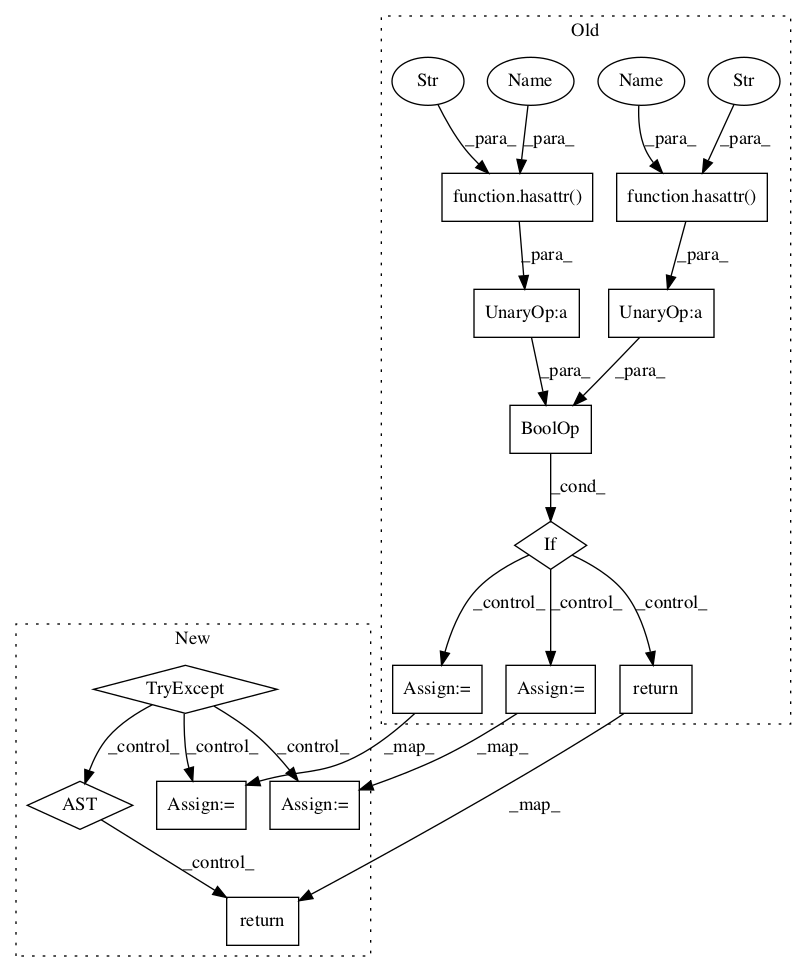

Pattern ID :52
Before Change
symbol (word) produced by A immediately follows the last
terminal symbol produced by B.
"""
if (not hasattr(node, "root") or not hasattr(node, "treeposition") or
not hasattr(node, "parent")):
return []
pos = node.treeposition()
// go "upwards" from pos until there is a place we can go to the
// right
idx = len(pos) - 1
current = node.parent()
while 0 <= idx and pos[idx] == len(current) - 1:
idx -= 1
current = current.parent()After Change
symbol (word) produced by A immediately follows the last
terminal symbol produced by B.
"""
try:
pos = node.treeposition()
tree = node.root()
current = node.parent()
except AttributeError:
return []
// go "upwards" from pos until there is a place we can go to the
// right
idx = len(pos) - 1In pattern: SUPERPATTERN
Frequency: 3
Non-data size: 14
Instances Fragment ID: 101635
Project Name: nltk/nltk
Commit Name: 37693dd3c533e39e37b9ad4480f17bcee4ae674f
Time: 2015-02-18
Author: will.roberts@rz.hu-berlin.de
File Name: nltk/tgrep.py
Class Name: AnonimousClass
Method Name: _immediately_after
Fragment ID: 101552
Project Name: nltk/nltk
Commit Name: 37693dd3c533e39e37b9ad4480f17bcee4ae674f
Time: 2015-02-18
Author: will.roberts@rz.hu-berlin.de
File Name: nltk/tgrep.py
Class Name: AnonimousClass
Method Name: _after
Fragment ID: 101639
Project Name: nltk/nltk
Commit Name: 37693dd3c533e39e37b9ad4480f17bcee4ae674f
Time: 2015-02-18
Author: will.roberts@rz.hu-berlin.de
File Name: nltk/tgrep.py
Class Name: AnonimousClass
Method Name: _immediately_after
Fragment ID: 101526
Project Name: nltk/nltk
Commit Name: 37693dd3c533e39e37b9ad4480f17bcee4ae674f
Time: 2015-02-18
Author: will.roberts@rz.hu-berlin.de
File Name: nltk/tgrep.py
Class Name: AnonimousClass
Method Name: _before